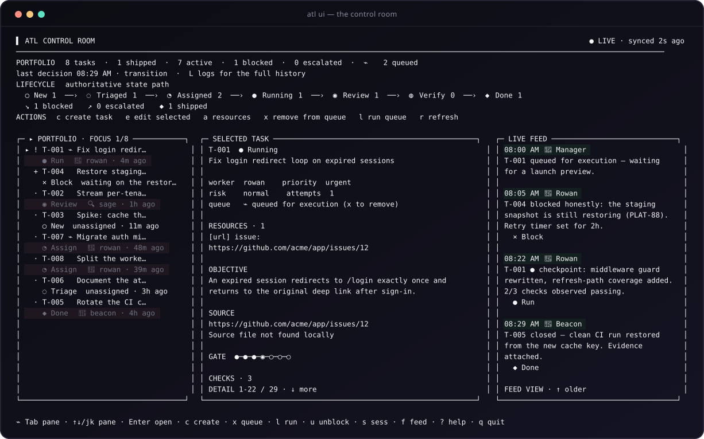
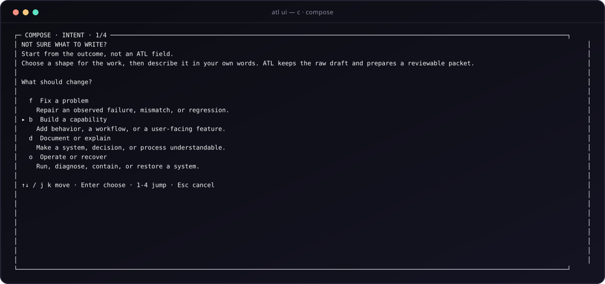
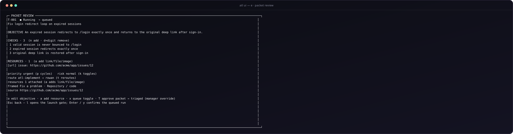
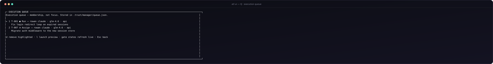
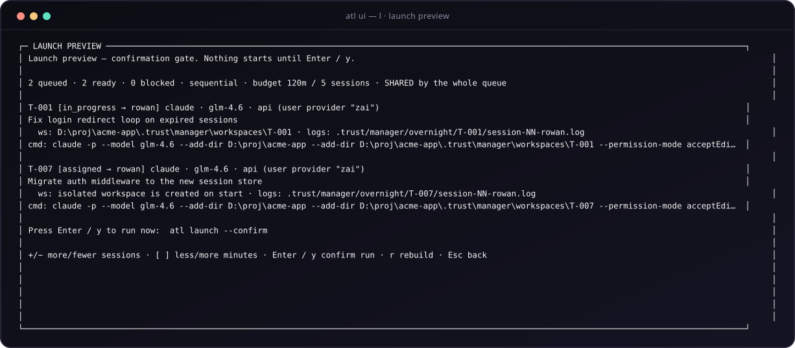
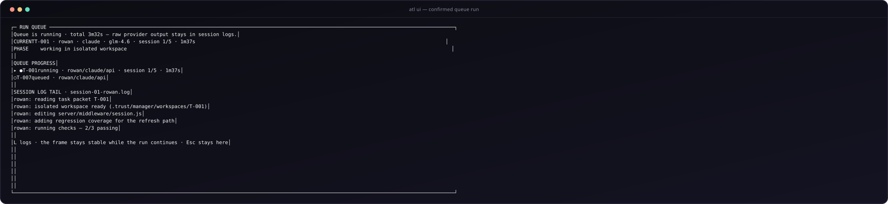
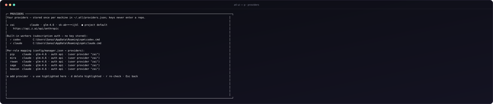

Install ATL skills into your agent
npx skills add depie99/Agent-Trust-Ladder --all
Restart the agent afterward. This does not copy the ATL repository or third-party skills into your project.
ATL has two layers: skills for your agent and a local team runtime for task state. This page explains exactly where each piece goes, how to initialize a target project, and why local overnight execution is different from Claude cloud sessions.
The current ATL overnight command launches a local codex exec or claude -p process. The laptop and process must remain available. True Claude cloud work uses claude --cloud, runs against a GitHub repository, and can continue after you leave the laptop; ATL does not yet synchronize that cloud branch, PR, and evidence back into local manager state.
claude login, open Claude Code and confirm /status, then use ATL's --auth subscription. ATL removes known API/provider variables from the child process and never falls back to API mode. Use --auth api only when API billing is intentional.Each name is a strict contract, not a personality. The runner physically rejects any command that falls outside the actor's contract — that rejection is the system working. The human manager sits above Mira and may override anything with --actor manager.
Coordinator / chief of staff. Assigns triaged work, unblocks stuck tasks, escalates to you, and writes the manager brief. Keeps the whole picture moving.
May not: write application code, merge, deploy, or review her own coordination.
Intake and triage. Turns raw reports into bounded tasks: one objective, observable completion checks, priority, and risk. Rejects noise with a reason.
May not: implement anything or assign workers. A task leaves triage only with at least one observable check.
Builder. Implements, refactors, and debugs — only inside the task's isolated workspace (git worktree or clone). Records observed evidence and checkpoints progress.
May not: touch your active checkout, self-certify, or retry a third time without a new hypothesis.
Independent reviewer. Reads the diff and the evidence packet — never just the builder's conclusion — then approves or requests changes with findings.
May not: implement fixes or approve without seeing the diff and evidence.
Verifier / night watch. Closes a task only when every completion check has passing observed evidence. Watches retry timers, stale work, and preserves run memory.
May not: build, extend budgets, or mark done from intention instead of observation.
These are separate installs. Skills go into your agent's skill directory. The team runtime is installed once for your user and creates state only inside projects where you run atl init.
npx skills add depie99/Agent-Trust-Ladder --all
Restart the agent afterward. This does not copy the ATL repository or third-party skills into your project.
mkdir D:\tools cd D:\tools git clone https://github.com/depie99/Agent-Trust-Ladder.git cd Agent-Trust-Ladder scripts\install-atl.cmd
git clone https://github.com/depie99/Agent-Trust-Ladder.git cd Agent-Trust-Ladder ./scripts/install-atl.sh
C:\Users\<you>\.atl\ atl.cmd runtime\ runtime\prompts\ skills\
C:\Users\<you>\.codex\prompts\ C:\Users\<you>\.claude\commands\
atl --help. If it is not found, rerun without --no-path or call %USERPROFILE%\.atl\atl.cmd directly.--no-path skips the PATH change; ATL_HOME=<dir> relocates the install. Re-running the installer is how you update. Uninstall: delete ~/.atl, the wired atl-*.md prompt files, and drop ~/.atl from PATH.No installer? Every command also works from a repo clone as node runtime\atl-manager.mjs <command>.
Update your ATL installation by pulling the desired repository revision and rerunning the installer. From an ATL source checkout, run atl ui-refresh to start the browser UI with that checkout's matching interface and API. In other projects, the command uses the installed runtime; refresh does not download a newer release. Stop an older server and start the refreshed one to use the new code.
git pull scripts\install-atl.cmd atl ui-refresh
On macOS or Linux, use ./scripts/install-atl.sh instead of the Windows installer. To use a separate port, run atl ui-refresh --port 4201.
atl intake enable github / azure to wire a tracker.cd your-project atl init atl intake atl feed --roster
.trust/manager/state.json ← the team's brain .trust/manager/inbox/ ← drop task files here .trust/manager/briefs/ ← saved manager briefs .trust/manager/workspaces/ ← isolated per-task copies config/manager.json ← intake sources, budgets, routines config/model-routing.json ← the roster + model policy
Three ways in. All are deduplicated — the same task never enters the queue twice.
Drop .md files into .trust/manager/inbox/. A ## heading starts a task; a Checks: list pre-fills completion checks; a plain - [ ] item line becomes a minimal task. Pip still owns triage — pre-filled checks are a head start, not a verdict.
## Fix login redirect loop @source: https://github.com/you/repo/issues/12 @priority: high @risk: risky Checks: - valid session is never bounced to /login - expired session redirects exactly once
atl intake # + T-001 [new] (file) Fix login redirect loop
Enable from the CLI — it probes each repo the way intake will read it, then flips intake.github in config/manager.json. Every open issue becomes a candidate task carrying its labels.
atl intake enable github --repo owner/name atl intake status # per-source state + auth readiness atl intake --source github
gh auth login or set a GITHUB_TOKEN with read access, then re-run it (--force skips the probe). Drop a stale repo with --remove owner/name; turn the source off with atl intake disable github.Works with self-hosted Azure DevOps Server. The adapter queries the sprint iteration by WIQL and pulls tasks, bugs, and stories with state, type, priority, and assignee.
"azure": {
"enabled": true,
"org_url": "https://devops.example.com/Collection",
"project": "MyProject",
"iteration_path": "MyProject\\Sprint 73",
"token_env": "AZDO_PAT"
}set AZDO_PAT=<your-token> (PowerShell: $env:AZDO_PAT="...") atl intake enable azure # refuses until the token env var is set atl intake --source azure
Work moves through fixed gates. Every stage records who acted and what they observed — the table below is the whole workflow.
atl triage T-001 → update --set objective=… --check "…" → move triagedatl assign T-001 --to rowan --actor miraatl workspace T-001 → move in_progress → change code in the workspaceupdate --evidence-pass "…" → move in_reviewupdate --review "approve: findings" → move verifyingmove done — only when every check has passing evidenceblock --reason "…" --wake-in 8h · escalate --reason "…"Blocked work carries a retry timer that Beacon watches. Exhausted attempt budgets (default 3) escalate to you. The full state machine is on the Diagrams page ↗.
Run atl ui and the terminal becomes the team's room: one live screen that projects .trust/manager/state.json, feed.jsonl, the execution queue, and provider session logs into three panes — portfolio, selected task, live feed. The room re-reads state every ~2 seconds (every second while a run is active), so what you see is always the authoritative state, never a cached copy. Everything you do in it goes through the same runner functions the CLI uses: the TUI can shape and select work, but no agent session ever starts without the launch gate.
atl ui # the interactive room (alias: atl dashboard) atl dashboard --once --plain # static snapshot for logs / CI / ssh
Tab focus the next pane (portfolio → detail → feed) ↑↓ / j k act on the focused pane 1–9 jump the portfolio selector to a task ? in-app help · q quit without changing state

scripts/render-tui-images.mjs) — a real terminal draws exactly these panels.Press c: choose what should change (fix / build / document / operate), where it lands (repository, UX, team, operations), then describe the task in your own words. Ctrl+S shows the generated ATL packet — title, objective hint, checks, route, priority — and nothing is saved until you approve the preview. Press i instead to import read-only candidates from the file inbox, GitHub issues, or Azure Boards.

The packet is the task's contract: objective, observable completion checks, resources, priority, risk, and route. Edit the objective (o), add checks (n), remove one (d + digit), attach a URL or file (a), cycle priority (p), toggle risky (k), reroute (t) — or approve the packet straight to triage as a manager override (Shift+T).

x toggles the selected task in the persistent execution queue — membership is a stored decision in queue.json, not keyboard focus. Q opens the queue with live gate state per task; l opens the launch preview, which shows the exact role, provider, model, auth, workspace, session-log path, and full command per task, plus the shared time/session budget. That budget is shared by the whole queue — +/− adds or removes sessions (1–20) and [ ] moves minutes in steps of 15 (15–1440) right on the preview, and the confirm command reflects the change. Nothing starts until you press Enter or y. A confirmed run is strictly sequential and bounded; the run screen shows queue progress and the active session-log tail while it works. The same guarantees hold without the UI: atl launch --dry-run previews, atl launch --confirm --max-minutes m --max-sessions n runs.



Press p to see the launch boundary: stored API providers, the built-in codex and claude executables discovered on PATH, and the effective provider/model/auth for every role. Add a provider with a — pick a template (Z.ai GLM, Zhipu bigmodel.cn, or any Anthropic-/OpenAI-compatible endpoint), paste the key, choose the model, done. Press u to make the highlighted provider this project's default, d to delete, r to re-check executables.

atl provider templates # pre-filled endpoint presets atl provider add zai --key <key> --model glm-4.6 atl provider key zai --key <new-key> atl provider use zai # project default atl provider use zai --role sage # one role only atl provider remove zai atl provider set --provider codex --model gpt-5.6-luna atl provider set --role rowan --provider codex atl provider clear --role rowan atl provider models --provider codex
~/.atl/providers.json API providers: base URL, key,
model — once per machine, never
inside a repository
config/manager.json project choices:
"providers": {
"use": "zai", ← project default
"by_role": { "sage": "codex" } ← per-role override
}~/.atl/providers.json, outside every repository. The TUI and CLI only ever show masked keys (sk-ab••••ijkl). At spawn time the credentials are injected into the worker's environment — claude gets ANTHROPIC_BASE_URL and ANTHROPIC_AUTH_TOKEN with every model slot pinned, codex gets a staged CODEX_HOME whose config points at the endpoint through an env key — and never written to the repo or task state.r on the providers screen to re-check.Tab / Shift+TabMove pane focus: portfolio → selected task → live feed.MouseCapture is off: drag to select and copy any text. Shift+M hands the mouse to the room for wheel panning (Shift+drag still selects).↑↓ / j kAct on the focused pane — move the task selector or scroll detail/feed.PgUp/PgDn, Home/EndBigger jumps and top/tail, pane-aware.1–9Jump the portfolio selector straight to a task.Enter / oRead the selected task's source file inside the room.c / iCompose a task in plain language · import read-only candidates (inbox / GitHub / Azure).e / vPacket review: objective (o), checks (n add, d+digit remove), resources (a), priority (p), risk (k), reroute (t), approve (Shift+T).xAdd/remove the selected task in the execution queue.lLaunch preview; Enter / y confirms the bounded run. +/− and [ ] resize the shared session/minute budget first.uUnblock a blocked task — requires writing what changed; then x and l.Q / L / s / fExecution queue · merged decision+feed logs (F follow) · provider session logs · full team feed.pProviders screen: a add · u use here · d delete · r re-check executables.rForce a refresh (state and feed are also re-read automatically).? / Esc / qIn-app help · back to the dashboard · quit without changing state.The deeper walkthrough — compose, review, queue, launch, provider registry — lives on the Control Room page ↗; every command also works without the UI (see the reference table below).
Everything the team knows lives in .trust/manager/state.json — tasks, evidence, blockers, timers, and a full decision trail. Any session (yours, a fresh agent window, tomorrow morning) resumes from that file instead of re-deriving. Builders work in disposable per-task workspaces, so a crashed session never leaves your checkout dirty. The wake loop (atl wake) is the heartbeat: run it any time and Mira tells you exactly what should happen next — untriaged arrivals, stale checkpoints past the 24-hour budget, exhausted retries, due timers, and escalations.
Objective: Complete when: Allowed actions: Forbidden actions: Workspace / branch: Checks and evidence: Wake / revisit condition: Stop and escalate when: Morning report location:
atl wake # what happened, what needs you atl brief --save # the manager brief, saved to briefs/ atl feed # the full story, bot by bot
The installer detects these harnesses and copies the role prompts into place: ~/.codex/prompts and ~/.claude/commands. In a session, type /atl-mira to coordinate, /atl-pip to triage, /atl-rowan to build, /atl-sage to review, /atl-beacon to verify. The prompt makes the agent load its contract first and act only through the runner. Add one line to your project's AGENTS.md / CLAUDE.md ("This project uses the ATL team: run atl wake and follow the role prompts") so every session knows the team exists.
No slash-command support needed. Open ~/.atl/runtime/prompts/, copy the role you want (mira.md, pip.md, rowan.md, sage.md, beacon.md), and paste it as the first message of any agent session opened in your project. Same contracts, same enforcement.
Every command takes --actor, and the runner tells you who is allowed to do what. Try to assign as Rowan and the runner refuses and names the right role. The human manager (--actor manager) can always override. Delegate what you want; keep the gates you care about.
atl assign T-001 --to rowan --actor mira
Routines are Mira's decisions written down ahead of time, applied at intake. when matches source, keyword, label, or work-item type; then sets priority, risk (risky implies independent review), and/or a pre-routed worker — the moment Pip finishes triage, the runner kicks that worker automatically.
"routines": [{
"name": "bugs-to-rowan",
"when": { "source": "github", "label": "bug" },
"then": { "priority": "high", "assign_to": "rowan" }
}]atl routines lists declared policies; the feed shows each one firing.
atl feed --roster # roster + full transcript atl feed --task T-001 # one task's thread
Pip announces grabs and triage verdicts; Mira announces routing ("kicking rowan."); Rowan claims with a ● Running card; Sage posts verdicts; Beacon closes with ● Done.
atl wake # what should happen next atl brief --save # shipped · blocked · evidence · next moves atl show # the portfolio at a glance
Escalations land with you. Merge, deploy, spend, external messaging, and policy always stay human decisions.
The team is the runtime; ATL's skills are the methodology any agent can load — the same repo ships both, and they install separately.
The skills CLI ↗ installs into 75+ agents — Claude Code, Codex, Cursor, Gemini CLI, and more — from this same repository:
npx skills add depie99/Agent-Trust-Ladder --skill agent-trust-ladder -a codex -a claude-code
Slash commands for Claude Code are also in the repo under commands/. Restart your agent session after installing so skills are discovered.
show-me and visual-pr can improve handoffs and PR descriptions, but they are not ATL files and must not be copied into this repository. Install them only in your agent's own skill location; if you do not install them, ATL still works.atl is the front door — describe a problem and it routes to the smallest trustworthy workflow. atl-frame / atl-specify / atl-plan / atl-implement / atl-verify are the delivery ladder: bound the idea, define observable behavior, map the codebase, execute with repair loops, and prove it. atl-team is the coordination contract this runtime enforces. atl-audit judges an existing diff or session. atl-trust decides, from recorded evidence, how much autonomy a task class has earned. atl-bootstrap onboards an existing codebase honestly. Full list on the Skills page ↗.
A bot playing Rowan can load atl-implement for its bounded repair loops; Sage reviews with atl-audit standards; Beacon's finish checks are atl-verify evidence packets; and every earned outcome feeds atl-trust, which is what lets you widen the bots' budgets over time without guessing. The runtime enforces the gates; the skills provide the craft inside them.
atl initScaffold this project's state, inbox, briefs, workspaces, and config.never touches codeatl intake [--source …]Pull tasks from file inbox, GitHub issues, Azure Boards. Deduped.routine policy appliesatl triage <id>Print Pip's triage packet: source, hint, and the exact commands to fill it in.read-onlyatl update <id>Write fields: --set k=v, --check, --evidence-pass/fail, --review, --checkpoint, --note.actor's may-write listatl move <id> <status>Advance the state machine: triaged → assigned → in_progress → in_review → verifying → done.actor + required evidenceatl assign <id> --to …Route a triaged task to pip, rowan, sage, or beacon.Mira onlyatl workspace <id>Create the isolated worktree / clone / scratch dir for a task.workers never touch active checkoutsatl block / escalateStop honestly with a reason; optionally --wake-in 8h retry timer.reason requiredatl why [id]The full, untruncated "why" behind every blocked or waiting task, plus the exact command that fixes it.read-onlyatl approve <id> [--note …]The owner gate in one word: records your approval as evidence, clears an approval blocker, queues the task.human only — the approval stays on the recordatl wakeThe heartbeat: every item needing action, by role.read-onlyatl brief [--save]The manager brief: shipped, blocked, needs decision, evidence, next moves.Mira's voiceatl feed [--task] [--roster]The team chat: every action narrated with status cards.read-onlyatl routinesList declared when/then routing policies.read-onlyatl role <name>Print a role contract for an agent session to adopt.read-onlyatl run / overnightLaunch one bounded local Codex/Claude role session or continue through bounded gates.--confirm + time/session budgetatl ui / dashboardThe control room: portfolio, packets, feed, composer, queue, launch preview, and confirmed run.explicit Enter/y confirmationatl compose [--title] [body] [--check …]Plain-language task in: immutable draft + new candidate.idempotent by content; no agent startedatl queue add / remove / list / clearPersistent execution queue, separate from UI focus.existing non-terminal tasksatl launch --dry-run / --confirmPreview, then run the queued tasks sequentially with per-role providers and one shared budget.--confirm + provider discovery + budgetatl providersStored API providers, masked keys, built-in worker discovery on PATH, and the per-role mapping.read-onlyatl provider add / key / use / removeStore a named API provider once per machine in ~/.atl/providers.json; point the project (or one role) at it.keys never enter a repoatl provider set / clearPersist project-default or per-role worker/model/auth choices in config/manager.json.validated before any previewatl show / validatePortfolio view / integrity check of state and config.read-onlyatl is not recognizedPATH not wired (installed with --no-path, or new terminal needed)Re-run the installer without --no-path, open a new terminal, or use %USERPROFILE%\.atl\atl.cmd directlygh auth login or set GITHUB_TOKENAZDO_PAT not setCreate a token with Work Items: Read, then set AZDO_PAT=…error: T-xxx: … must be performed by …Wrong actor for the gateIntended behavior — re-run with the named --actor, or --actor manager to overrider on the providers screen (p) or re-run atl launch --dry-runatl why prints the full blocker plus its fix; approval gates resolve with atl approve <id>workspaces.repos.<owner/name>.path in config for worktrees, or let it fall back to a clone/scratch dir.trust/manager/state.json and re-run atl init — briefs and feed history stayThe full command documentation lives in the repo's runtime guide; the state machine, access model, and trust loop are drawn on the Diagrams page.